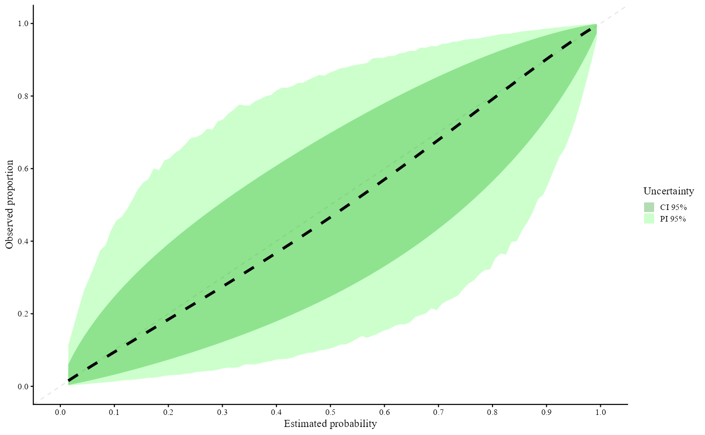

Calibration performance with cluster adjustment (ggplot version)
valProbCluster.RdThis function evaluates the calibration performance of a model's predicted probabilities whilst accounting for clustering. The function supports multiple approaches (`"CGC"`, `"MAC2"`, `"MIXC"`) and returns the results as well as a `ggplot` object.
Arguments
- data
optional, a data frame containing the variables
p,y, andcluster. If supplied, variable names should be given without quotation marks.- p
predicted probabilities (numeric vector) or name of the column in
data- y
binary outcome variable or the name of the column in
data- cluster
cluster identifier (factor, character, or integer) or name of the column in
data- plot
logical, indicates whether a plot needs to be produced. If
TRUE, a plot will be constructed by the chosen subfunction.- approach
character string specifying which calibration method to use. Must be one of the following:
"CGC": Clustered Grouped Calibration;"MAC2": Meta-Analytical Calibration Curve;"MIXC": Mixed-Effects Model Calibration.
Defaults to
"MIXC".- cl.level
the confidence level for the calculation of the confidence intervals. Default is
0.95.- xlab
label for the x-axis of the plot (default is
"Predicted probability").- ylab
label for the y-axis of the plot (default is
"Observed proportion").- grid_l
integer. Number of points in the probability grid for plotting (default is
100).- rangeGrid
the range of the grid. Default is
range(p).- ...
additional arguments to be passed to the selected subfunction (
CGC,MAC2andMIXC).
Value
An object of class "valProbCluster" containing:
call: the matched call.approach: the chosen approach.cl.level: the confidence level used.grid: probability grid used for plotting.ggplot: aggplotobject if returned by the subfunction, otherwiseNULL.results: results from the chosen subfunction.
Details
The function internally calls one of the following subfunctions:
CGC(p, y, cluster, plot, ...)MAC2(p, y, cluster, plot, grid, ...)MIXC(p, y, cluster, plot, CI, grid, ...)
Extra arguments supplied via the ellipsis argument ... are passed directly to the chosen
subfunction. Please check the additional documentation of
CGC, MAC2 and MIXC for detailed information on the arguments.
References
Barreñada, L., De Cock Campo, B., Wynants, L., Van Calster, B. (2025). Clustered Flexible Calibration Plots for Binary Outcomes Using Random Effects Modeling. arXiv:2503.08389, available at https://arxiv.org/abs/2503.08389.
Examples
# \donttest{
library(lme4)
#> Loading required package: Matrix
#>
#> Attaching package: 'lme4'
#> The following object is masked from 'package:nlme':
#>
#> lmList
data("clustertraindata")
data("clustertestdata")
mFit = glmer(y ~ x1 + x2 + x3 + x5 + (1 | cluster),
data = clustertraindata, family = "binomial")
preds = predict(mFit, clustertestdata, type = "response", re.form = NA)
y = clustertestdata$y
cluster = clustertestdata$cluster
valClusterData = data.frame(y = y, preds = preds, center = cluster)
# Assess calibration performance
Results = valProbCluster(
p = valClusterData$preds, y = valClusterData$y, cluster = valClusterData$center,
plot = TRUE,
approach = "MIXC", method = "slope", grid_l = 100
)
Results

#> Call:
#> valProbCluster(p = valClusterData$preds, y = valClusterData$y,
#> cluster = valClusterData$center, plot = TRUE, approach = "MIXC",
#> grid_l = 100, method = "slope")
#>
#> A 95% confidence interval is used.
#>
# }